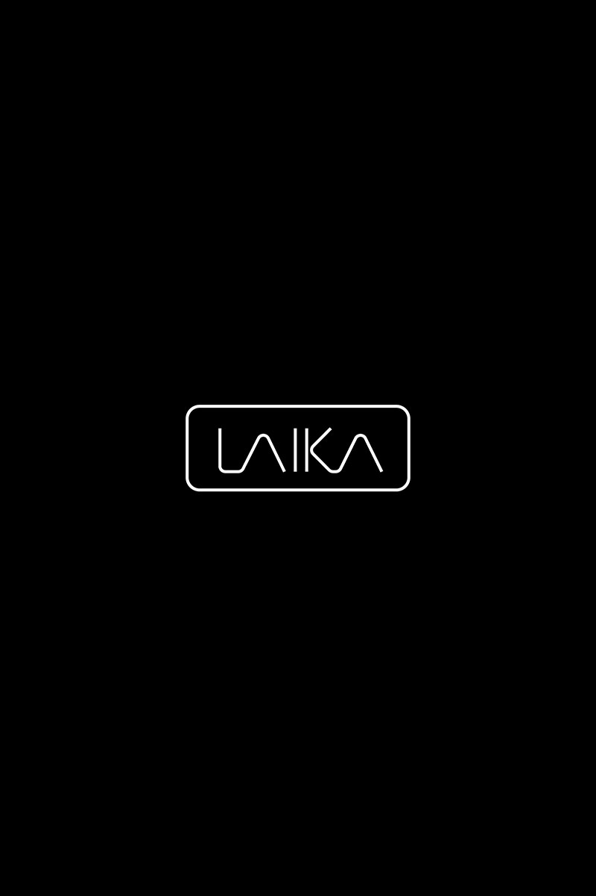
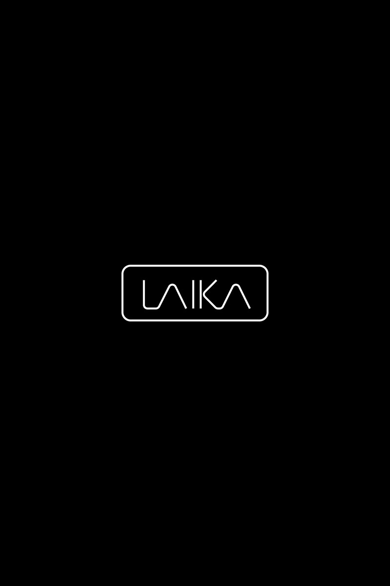

Personal Website Victor Wambua | Bsc. Information Technology.
Professional Summary
Hands-On and detail-oriented I.T professional with at least 3 years experience in software development, system implementation and project management. Demonstrated expertise in software configuration, client communication, testing & debugging and end-user training. Skilled in building client relationships, project mgt and delivering high-quality implementations that exceed client expectations. Highly skilled in Payroll processing, Time Attendance, HR management system & Restaurant POS system implementation. Gritty.
Skills: Software Development, UI/UX Design, System Implementation, QA, Project Mgt, Data Entry, Customer support and Leadership.
Certifications: Agile Project Management.